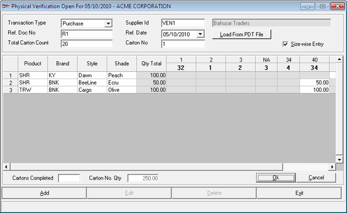
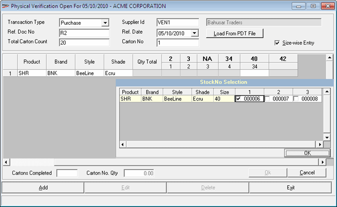

Physical verification of stock based on stock numbers is time consuming. This option helps you to save time by providing size wise quantity grid, for entering item quantity received for each combination of Class1 (Product), Class2 (Brand), SubClass1 (Style), SubClass2 (Shade), in a single line.
If check box Size-wise Entry is selected, then the window is displayed as shown.

Product (Class1): Enter or press F2 to browse and select the required product.
Brand (Class2): Enter or press F2 to browse and select the required brand.
Style (SubClass1): Enter or press F2 to browse and select the required style.
Shade (SubClass2): Enter or press F2 to browse and select the required colour.
Place the cursor in any cell of the grid and press F2 to view the Item Classification Browse window. Select the item from the list displayed.
Only those sizes relevant to the combination are highlighted and you are allowed to enter quantity received against the respective sizes.
Note: The value set for the parameter - Apply LSQ in Physical Verification has no effect in size wise entry.
Qty Total : The sum of the quantity entered in different sizes in a line is displayed here.
If there is more than one stock number in the items master for the given combination of Item then the user gets a pop-up window, as shown.

Click on the check box to the left of the required stock number.